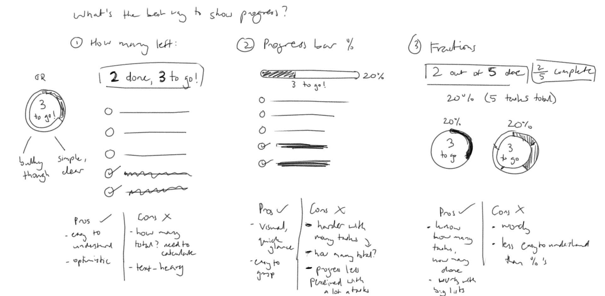

Overview
Daily app is a personal project that started with a simple idea: a to-do list that refreshes every day. During my study breaks, I often didn’t have a set-routine yet wanted to get into the habit of doing something every day. As I was accustomed to making lists for managing studies and projects, I wrote up a checklist on my notetaking app for things I wanted to do every day. However, for tasks such as “sketch something every day”, it wasn’t appropriate to tick it off the list when I would also have to uncheck and tick it off for the next day. While habit trackers and calendars exist to track the completion of everyday things, I wanted to explore how an app would work for specifically recurring tasks that had the same satisfaction as crossing items off a list, with the convenience of programmed settings.
The result of this is Daily, a recurring to-do list app where you can create a list of tasks that automatically resets completion when you want, as well as measure today’s progress using in-built features. Small notes can also be added to the memo for temporary reminders as you go about your day.

Process
Initial sketches
The design went through multiple iterations of increasing fidelity. Since I already had an idea of the functions of the app, I sketched out thumbnails of the screens to gain ideas of ways to portray it.
Wireframes and mockups
Adobe Illustrator was then used to create mockups for the main app functions and for prototyping. Inspired by card design and the Apple App Store’s Today tab, I chose to have a home page headlined as “Today”, with the day’s active lists on cards. Each card would have the name of each list and its description, total progress and its unfinished tasks that can be quickly checked off from there.
For each list, I wanted total progress to be directly below the title and description and be conveyed in a way that was positive and motivating. At this point, I was looking at two ideas:
a sentence saying how many has been done and how many there was left to do
OR a progress bar coloured by urgency with the percentage of tasks done
Underneath the list progress, would be the items on expandable rectangular cards with circular checkboxes. Items could be expanded to look at more information on the task and its current and weekly stats. Again, I was looking at two slightly different ways to portray this:
an accordion-like list where clicked on tasks expand downwards
OR having the task on a separate screen where it could be edited individually
Items can also have its own progress bar to track partial completion if it can be measured by counting or be timed. For this, I highlighted numerical and time measurements in orange, where clicking on them would lead you to a counter or timer screen.
At this point, I realised that concept functions was getting more complicated. To gain some feedback on the overall concept and ideas going forward, I created a quick prototype using Invisionapp for the home and list screens and tested them with a few potential users. I also did A/B testing on the two designs for the list progress and task details to understand which one was the most clear and likely to be useful. What I found was that while the progress bar was familiar, it may be difficult to see visual changes with a large list of tasks. Having the colour red when less than half of the tasks was even likened to a low battery bar which was a negative point. The separate task screen, however, was preferred as it has more details.
Refining the design
In order to choose the best way to show list progress, I drew up the options and listed the pros and cons of each based on the feedback given. I briefly considered a donut chart that combined the two previous options but decided against it as it took more space when the focus should be on the list items.
I decided to go with the text of how many was left at the top as it was simple, personable and less obtrusive to the list. The percentage is also displayed as it is also on the list card on the home screen.
I reiterated on the wireframes to reflect this and considered the addition of more features, such as the countdown for tasks at specific times. As the app focuses on a list that resets daily with features to measure completion, I had to take a step back to explore the onboarding experience of the app and how users would actually set how lists recurred. To do this, I drew up a storyboard of the UI for how users would make new lists which helped to develop the flow of the list creation process.
As I aimed to implement card design, I had to consider the intuitive interactions of cards, especially for the list. In place of the separate task card screen when clicking on tasks for more details, I decided to make the card expand but separate from the other cards on the same screen, as imitation of pulling out a file from a file drawer. Since some tasks may not be measured by counts or time, I also considered whether only having a progress bar for those that were made the list confusing. To explore this, I brainsketched on how list items would look and interact by bring in the initial thumbnail sketches to explore alternate options.
As a result, the strikethrough type of finished tasks would instead be replaced by swiping tasks using the card progress bar. In this way, the progress bar would appear on every list item and be interactive through swiping, but would only depict partial progress for tasks that are measured using inbuilt trackers. Part of the sketching also looked at simplifying colours to show progress and the editing of task cards when expanded.
Final Prototype
The final prototype I created depicts the interactions of most screens of the concept. This includes home, lists, memo, a daily list, list editing, and list and memo creation.
For the user interaction of completing tasks, I also created short animations in After Effects to depict how cards can change.
Takeaways
Working on the project has shown me how complex a simple idea can become when considering the flow between screens and the user experience of creating and editing items in apps. It was an individual learning experience in designing interfaces and incorporating trends such as card and motion design.
For the concept to be operational, extra settings may need to be considered as well as input for the options considering date and time. Overall statistics would also be helpful for long-term tracking of tasks and lists. For this personal project however, I have left it as it is as room for improvement and to portray the overall concept.